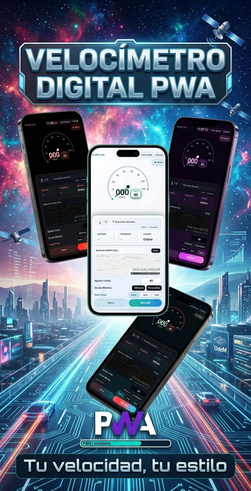
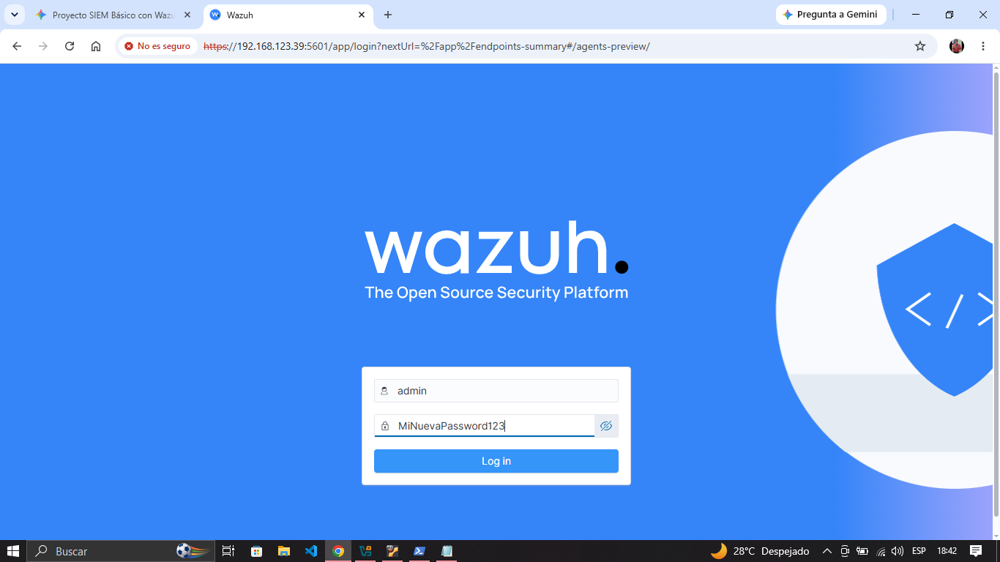
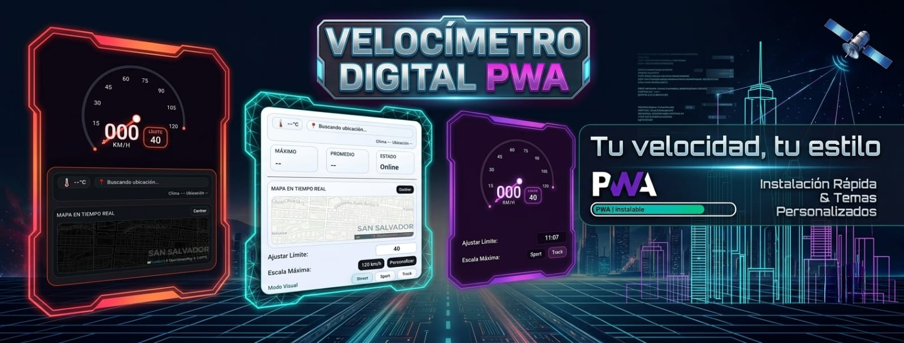
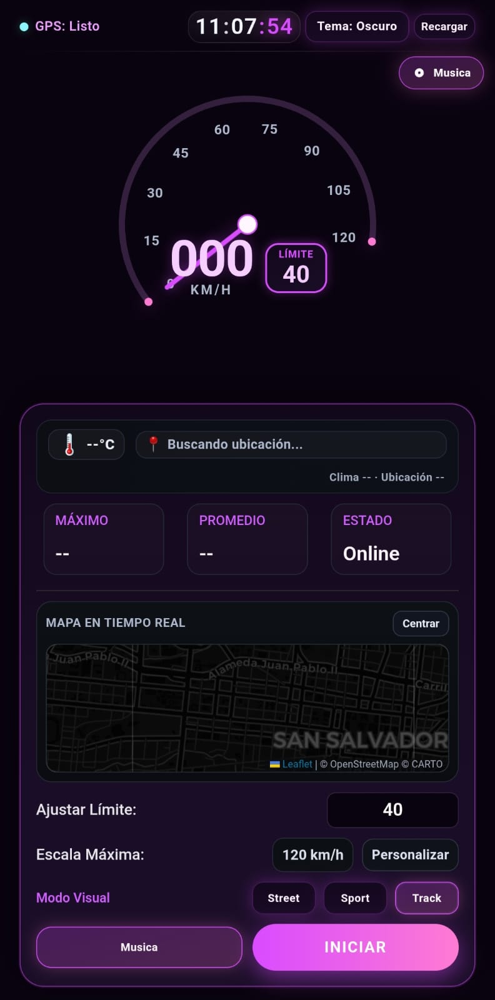
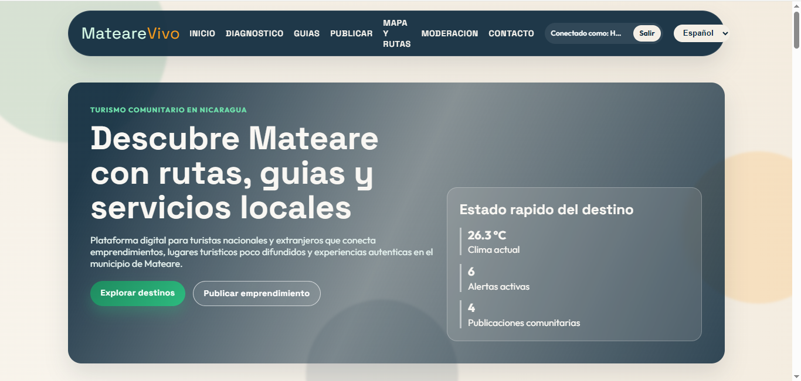
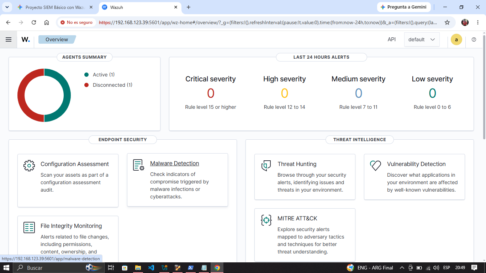

Perfil
Presentación personal
Estudiante de la Universidad de Managua (UdeM). Apasionado por el desarrollo web eficiente, Diseñador, Informático y en la arquitectura de redes seguras.

.jpeg)


En Resumen...
Presentación personal
Presencia en entorno Universitario

Portafolio - Identidad visual principal

Tienda en línea - Ángeles Beauty - Productos Exclusivos - Managua, Nicaragua

Laberinto RGB

Diagnóstico de Hardware y Software en Equipos Informáticos

Tres en raya para parejas (en Desarrollo...)

Velocímetro PWA (en Desarrollo...)
Mateare Vivo | Turismo Comunitario Nacional y Extranjero

Implementación de SIEM/XDR con Wazuh
Combinación de desarrollo web, Redes, Ciberseguridad y Soporte Técnico para crear soluciones funcionales y de alto impacto visual.
Una selección de proyectos dónde se aplica diseño, lógica y creatividad para ofrecer experiencias digitales atractivas y útiles.
Carta de presentación digital, para la demostración de los proyectos y habilidades más destacadas.
Ver Detalles
Aplicación web desarrollada con HTML, CSS, JavaScript, Realtime Database, Cloud Firestore para la gestión eficiente de recursos de TI.
Visitar SitioSimulación y configuración de una topología de red segura utilizando Cisco Packet Tracer.
Es un juego interactivo que combina elementos de programación y diseño visual para crear una experiencia de usuario envolvente, mostrando las instrucciones para completar el nivel.
Ver Detalles
Aplicando principios de ingeniería para resolver fallas en el hardware y optimizar el rendimiento del software.
Es un juego interactivo de amor, dónde las parejas podrán vincularse mediante un código único generado por el juego, dónde la X y el 0 son corazones entre el rojo y el azúl, además cuenta con un chat privado, para jugar y chatear al mismo tiempo.
Ver Detalles

Es una aplicación web dónde puedes ver tu velocidad en tiempo real con GPS, puedes personalizar la velocidad máxima y el velocímetro, contiene alertas, mini mapa en tiempo real, clima y reproductor de música offline.
Ver Detalles
Es una aplicación web dónde puedes explorar el turismo en Mateare, conocer sus atractivos locales, el clima, rutas, noticias y mas.
Ver Detalles
Implementación y configuración de Wazuh para la monitorización de seguridad y gestión de incidentes en sistemas informáticos.